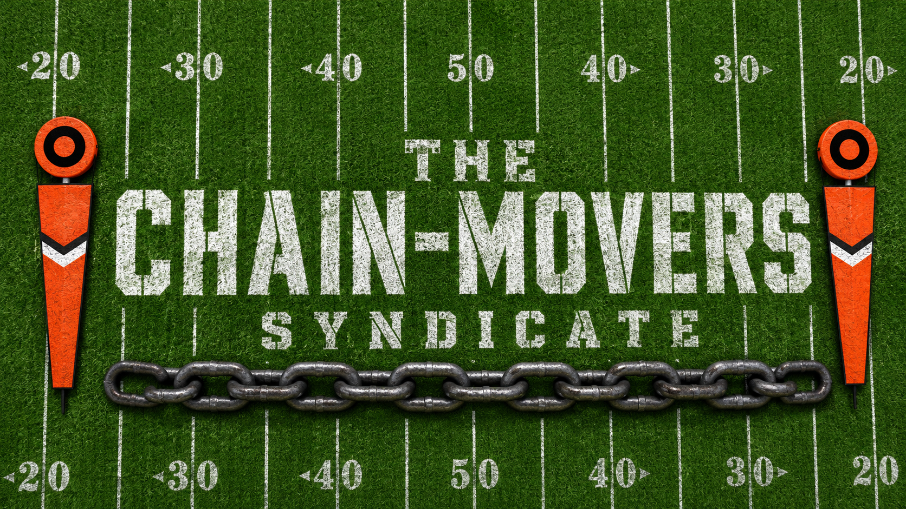

The Chain-Movers Syndicate Constitution
10-Team Superflex Dynasty | Established 2026

This isn't a casual home league; this is a multi-year chess match.
Welcome to the The Chain-Movers Syndicate. We built this league
because we got tired of casuals who stop setting their lineups in
November. We are here to build legacies, not just lineups.
In this room, we reward the grinders, the trade-machine junkies, and
the managers who know their third-string Tight End’s target share.
We’ve designed this constitution to be as precise as a 40-yard dime.
We’re here to talk trash, take names, and occasionally take each
other's money.
Play hard, trade often, and remember:
Second place is just the first person to lose.
I. Financials, Stability & Payouts
1.1 Membership & Dues
- League Size: 10 Teams.
- Annual Dues: $50 per season via LeagueSafe.
- The 2-Year Rule (Stability): All managers must be paid one year in advance. Initial buy-in is $100 (covers 2026 and 2027).
- Departure & Refunds: If an Associate leaves the Syndicate, prepaid future dues are only refunded after a replacement is found and has paid in full. If the departing Associate has depleted the team's assets (e.g., traded away future 1st-round picks), their deposit may be forfeited to subsidize the entry fee for the new manager at the Commissioner's discretion.
- Co-Owner Rules: Teams may have co-owners. The "Primary Manager" is the sole point of contact for dues and voting.
1.2 The Continuity Pick Tax
To trade a future draft pick, your dues must be paid up to and including the year of that pick. You cannot "skip" years of payment.
1.3 Payout Structure ($500 Total)
| Award | Amount | Criteria |
|---|---|---|
| 1st Place | $250 | League Champion |
| 2nd Place | $100 | Runner-Up |
| Points Champ | $50 | Most Total Points (Weeks 1-14) |
| Weekly Winners | $65 | $10 to the highest scorer each week (Weeks 1-13) |
| The M.A.S.H. Unit | $5 | Most total weeks missed for players on your end-of-season roster. |
| Bad Luck | $5 | Most Points Against (Regular Season) |
| Draft Master | $5 | Most total bench points (The "I benched the wrong guy" award) |
| Field General | $5 | Highest scoring quarterback |
| Chain Mover | $5 | Highest scoring running back |
| Primary Target | $5 | Highest scoring wide receiver |
| The Mismatch | $5 | Highest scoring tight end |
II. Roster & Scoring
2.1 Roster Composition
This is a deep-bench format designed to reward long-term talent evaluation and active roster management.
| Position | Quantity | Notes |
|---|---|---|
| Quarterback (QB) | 1 | Standard Starter |
| Running Back (RB) | 2 | Standard Starter |
| Wide Receiver (WR) | 2 | Standard Starter |
| Tight End (TE) | 1 | Standard Starter |
| FLEX (W/R/T) | 3 | Flexibility for RB/WR/TE |
| Superflex (Q/W/R/T) | 1 | The "Golden Slot" |
| Total Starters | 10 | --- |
| Bench | 16 | Active roster depth |
2.2 Specialty Slots
- Injured Reserve (IR): 2 Slots. Eligibility is strictly limited to players with the "IR" designation. (Players designated as Out, Doubtful, or PUP are not eligible).
-
Taxi Squad: 4 Slots.
- Eligibility: Only Rookies can be added to the Taxi Squad.
- Duration: Once on the squad, a player may remain there for an additional year (their sophomore season).
- Deadline: Players must be placed on Taxi before the first game of the regular season. Once the season begins, the squad is locked.
2.3 Detailed Scoring Logic
Our scoring model balances high-volume playmakers with efficient chain-movers.
| Category | Points | Category | Points |
|---|---|---|---|
| Passing TD | +5.0 | Rushing/Rec TD | +6.0 |
| Interception | -3.0 | Reception (RB/WR) | +0.5 |
| Pick 6 (Additional) | -1.0 | Reception (TE) | +1.0 |
| Passing Yard | +0.04 (1/25) | First Down | +0.5 |
| Rushing/Rec Yard | +0.1 (1/10) | 2-Pt Conversion | +2.0 |
| Fumble Lost | -2.0 |
2.4 Taxi Squad Poaching
- Initiation: An Associate must publicly declare a poach in the league chat tagging the target owner (e.g., "I am poaching Jonathon Brooks from Team X").
- The Cost: The claiming Associate must offer a draft pick of the same round the player was originally drafted in.
- Example: A player drafted in the 3rd round costs a 3rd round pick to poach.
- Premium Rule: If the player was a 1st round selection, the cost is two (2) 1st round picks.
- Year of the Pick: The pick can be for any future year currently available in the Sleeper system (e.g., 2027, 2028, or 2029).
- The Owner's 24-Hour Option: The defending owner has 24 hours to:
- Accept the Pick: Transfer the player to the claiming Associate.
- Promote to Active Roster: Move the player to their active bench. This player can never return to the Taxi Squad.
- Multiple Bidders: If other Associates want to jump in on the poach within that 24-hour window, they may offer their own picks. If the owner decides to take a pick, they have the absolute right to choose which Associate's pick they prefer to take.
III. The Campaign: Weekly Logistics
3.1 The Extra Game: League Median
To reduce the impact of "schedule luck," every team plays two games per week during the regular season:
- Head-to-Head: Your standard matchup against a weekly opponent.
- The League Median: A second game played against the league's average score for that week. If you finish in the top 5 scores of the week, you get a win. If you finish in the bottom 5, you get a loss.
3.2 Waivers & FAAB Pools
We use two distinct FAAB budgets to ensure talent is contested year-round.
- The Offseason Pool: Every manager receives $250 immediately following the Rookie Draft. This is for summer moves and training camp flyers. Leftover funds do not roll over.
- The Season Pool: On the Wednesday before Week 1, all budgets reset to $250 for the duration of the regular season.
- The Wednesday Cycle: The primary waiver wire clears every Wednesday morning.
- Roster Status: If your roster exceeds the limit (e.g., after a draft), it becomes "Invalid." You cannot set a lineup or make further moves until you cut down to the legal limit.
3.3 Trades & The Trade Deadline
Trading is the lifeblood of Dynasty. We encourage active negotiation.
- No Trade Vetos: The Commissioner will not veto trades based on "value." Only clear, proven collusion (under-the-table deals) will result in a trade reversal and potential ban.
- The Pick Tax: As noted in Section I, any trade involving a future pick requires dues to be paid through that pick's year before the trade is finalized.
- Trade Deadline: The deadline to trade for the current season is the kickoff of Week 13. After this, trades are disabled until the conclusion of the Fantasy Championship.
IV. The Tournament: Playoffs & Consolation
4.1 The Road to the Ship
The postseason begins in Week 15. Six teams qualify based on their total regular season record (H2H + League Median).
- The Bye: The #1 and #2 seeds receive a first-round bye.
-
Schedule:
- Week 15: Quarterfinals
- Week 16: Semifinals
- Week 17: Fantasy Championship
- Dynamic Re-seeding: This league does not use a fixed bracket. In every round, the highest remaining seed will always play the lowest remaining seed.
4.2 Standings Tiebreakers
If two or more teams finish the regular season with identical records, the following tiebreakers determine seeding:
- Max Points For (Max PF): Rewards the best overall roster build.
- Total Points For (PF): Rewards efficient lineup setting.
- Head-to-Head: Win percentage in matchups between tied teams.
- Bench Strength: Total points scored by all bench players over the regular season.
4.3 The Toilet Bowl (Consolation Bracket)
The bottom four teams compete in a consolation bracket strictly for pride and "the bit."
- The Prize: The winner of the Toilet Bowl earns an extra $100 FAAB. This can be put into one pool (in-season/out-season) or split between them. It is a strategic resource, not a cash prize.
- No Strategic Advantage: This award provides no draft picks, no cash, and no competitive edge. Nor should it since you got here by being one of the worst.
V. The Drafts: Startup & Rookies
5.1 The Startup Draft (The Genesis)
The initial league roster will be filled via a "Slow Draft" on Sleeper using Kentucky Derby Style (KDS) slot selection and Third-Round Reversal (3RR).
-
The KDS Process:
- A random generator determines a selection order (1-10).
- In that order, each manager chooses their desired draft slot.
- What is 3RR? In a standard snake, the 1.01 picks first in every odd round. In 3RR, the draft "flips" at Round 3. The person at the end of the draft (1.10) gets the 3.01, and the person who started at 1.01 now picks last in the 3rd round.
3RR Draft Order Example (10 Teams)
| Round | Direction | First Pick | Last Pick |
|---|---|---|---|
| Round 1 | 1 → 10 | Manager 1 (1.01) | Manager 10 (1.10) |
| Round 2 | 10 → 1 | Manager 10 (2.01) | Manager 1 (2.10) |
| Round 3 | 10 → 1 | Manager 10 (3.01) | Manager 1 (3.10) |
| Round 4 | 1 → 10 | Manager 1 (4.01) | Manager 10 (4.10) |
| Round 5 | 10 → 1 | Manager 10 (5.01) | Manager 1 (5.10) |
5.2 Annual Rookie Drafts
Following the NFL Draft, we hold a 4-round linear Rookie Draft (1-10, 1-10, etc.).
- Non-Playoff Teams (Picks 1.01 – 1.04): Ranked by Lowest Max Potential Points (Max PF). This ensures the weakest roster (not just the unluckiest) gets the top pick.
- Playoff Teams (Picks 1.05 – 1.10): Ranked by the inverse of the final playoff standings. The Champion always picks 1.10.
VI. League Integrity & Governance
6.1 Anti-Tanking & Abandonment
While we allow "rebuilding" (trading veterans for picks), we do not allow "lineup tanking." Managers must field a full, active roster weekly.
- The "Best Ball" Contingency: If a manager is removed or abandons their team mid-season, the Commissioner will take over the roster. To maintain league integrity, the lineup will be set using Best Ball methods (highest projected scorers) until a new owner is found. This ensures the team remains competitive and does not hand out "free wins" to opponents.
- Penalties: Repeatedly starting players who are on Bye, IR, or Out will result in formal warnings, followed by the potential forfeiture of future draft picks.
6.2 Governance & Evolution
This is a living document. We prioritize a functional league over rigid adherence to a bad rule.
- Rule Adjustments: While the offseason is the preferred time for changes, rule adjustments can happen at any time if a rule is found to be detrimental to the league.
- The Retroactive Ban: No rule change will ever be applied retroactively. Changes only affect future outcomes and cannot be used to overturn past scores, trades, or standings.
- Voting: Major changes require a Supermajority (7/10) to pass.
6.3 Trade Integrity & Collusion
- Anti-Veto Policy: All trades process immediately. There are no league votes. Trade fairness is subjective; managers are free to value talent as they see fit.
- Collusion Definition: The Commissioner will only reverse trades in cases of proven collusion (e.g., side-payments outside LeagueSafe or intentional asset dumping).
- Investigation Process: If collusion is suspected, both parties must provide their strategic reasoning to the Commissioner. Proven collusion results in instant expulsion and trade reversal.
6.4 Management & Co-Ownership
- The Primary Owner: Every team has one Primary Owner who is solely responsible for dues, voting, and communication.
- Handling Co-Owners: The addition or removal of co-owners is handled entirely by the Primary Owner within the Sleeper app. The Commissioner will not assign, unassign, or mediate disputes between co-owners.